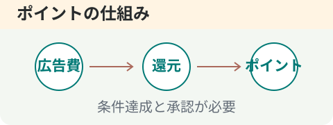

今日のおすすめ案件
公式ランキングからワラウ
各サイト公式ランキング1位から日替わりで紹介
楽天市場
1%
ワラウの公式掲載を見る2026-10-03確認。POI DAYS独自の優劣順位ではなく、取得できた各サイトの公式1位案件から日替わりで紹介しています。
人気のポイントサイト
主要4サイトを公式情報で確認して掲載しています。掲載順は人気順位ではありません。
各ポイントサイトの
今日のランキング
2026-10-03 取得 · 各ポイントサイトの公開ランキング
- 1

【10/11まで過去最高還元】三菱ＵＦＪカード
公式ランキング15,000P公式掲載 - 2
SBI証券 こども口座
公式ランキング9,000P公式掲載 - 3
※土日限定13,000P※楽天銀行 口座開設
公式ランキング1,500P公式掲載 - 4
auひかり
公式ランキング60,000P公式掲載 - 565,000P公式掲載
各サイトが公開しているランキングを表示します。取得失敗時は前回の正常データを残します。
モッピーの掲載案件と確認日を見る新着記事
一覧モッピーに登録できない？メールが届かない・電話番号認証できない時の対処法
モッピーでポイントが付かない？判定中・反映されない原因と対処法
モッピーは危険？怪しい？安全性・運営会社・注意点を公式情報で解説
モッピーの評判・口コミ｜良い評判と悪い評判を整理
【2026年10月】モッピー紹介コードはどこ？入力方法・後付け・特典を解説
【2026年10月】モッピー新規登録キャンペーン｜入会特典と条件を解説
モッピーのメリット・デメリット｜登録前に知りたい注意点
ポイントサイトの選び方｜4サイトの特徴を比べる6つの視点
ポイントサイトのゲーム案件の選び方｜失敗しにくい7つのチェック
モッピーの登録方法｜招待コード・紹介リンクの使い方
モッピーの稼ぎ方｜初心者が最初にやること
モッピーのゲーム案件｜初心者向けの選び方・注意点
ポイントサイトNEWS
公式お知らせを1日1回取得します。日付は公式の掲載日です。取得できないサイトは前回データを保持します。 今回未取得：モッピー。
- 2026.10.02ワラウ ご利用規約の一部改定（退会に関する項目の追加）に関するお知らせ
- 2026.10.01ワラウ Qoo10メガポ開催！お気に入り＆購入で最大520ptキャンペーン
- 2026.10.01ワラウ 新規登録で合計最大2,500ptがもらえるキャンペーン開催中！
- 2026.10.01ワラウ 【5のつく日限定】10月はお得にお買い物！5.5%増量 GoGoキャンペーン
- 2026.10.01ハピタス 「Ｇポイントギフト」 交換メンテナンスのお知らせ
- 2026.09.30ちょびリッチ 【交換】 18:40頃 再開：デジタルギフト系交換
今週の特集
今週の特集
ゲーム案件の選び方
高還元だけで決めない、7つのチェック
選び方ガイド
ポイントサイトの選び方
主要4サイトを、使い方から比べる
モッピー編
無料案件特集
小さく始めるヒント
準備中
高還元案件特集
還元額と条件を一緒に比較
初心者ガイド
START HEREまずはモッピーを例に、基本から。
PR紹介リンクです。登録・利用により、POI DAYS運営者が報酬を受け取る場合があります。
モッピーに無料登録する紹介コード Jh7He170。紹介特典の条件・期限は公式画面で確認してください。入力場所は紹介コードの記事で確認できます。
ABOUT US
POI DAYSについて
ポイントサイトの案件や使い方を、
自分のペースで調べられる場所。
還元額だけでなく、条件や注意点も一緒に。
暮らしに合うポイ活を見つけるお手伝いをします。